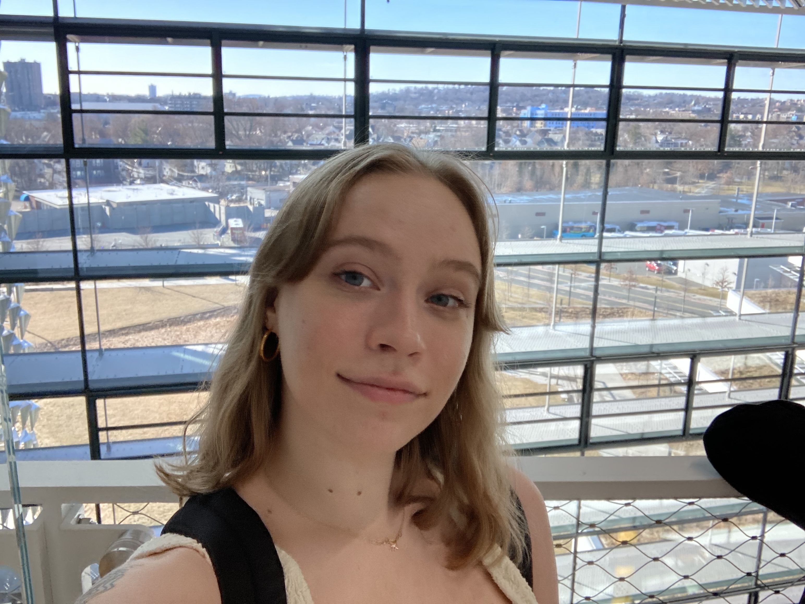

Bachelor of Science, Computer Science
Focus: Image processing, AI ethics, human-centered design.
- Salsa/Bachata Club · SWE/AGIC · Employee Language Program (Spanish) · WeCode 2023

Software Engineer · New Grad March 2026
Bellingham, WA · Open to relocating
I build production-grade image processing tools and care about ethical, user-centered software. Looking for an early-career role where I write real code on a collaborative team.
CS undergrad at WWU, graduating Mar 2026. I care about image processing, AI ethics, and human-centered design — software that’s maintainable, fair, and useful.
Good code is like good bread: it takes care, it feeds people, and it gets better with time.
Focus: Image processing, AI ethics, human-centered design.
Activities: NHS, Spartronics 4915 (Worlds in Houston), Swim & Dive, Cross Country, Earth Service Corps, Key Club, Debate.


Earlier roles (YMCA camp, B.I.Cycle, Bainbridge Island Metro Park & Recreation) on LinkedIn.
Things I’ve built and shipped. More on GitHub.
guess-my-name-chi.vercel.app
Quiz-based name prediction with rule-based filtering and a custom TensorFlow.js model (all in-browser, no external AI). Uses 47K+ SSA names, state and cultural data, and NPR/Namerology research. Interactive maps, optional feedback, and shareable results. Vanilla JS, deployed on Vercel.
rent-my-room-happy-valley.vercel.app
Single-page room rental site with household info, how we live, requirements, and application steps. Includes an 8-question compatibility quiz (Perfect / Great / Maybe / No) and a click-to-zoom lightbox gallery. Mobile-first. Vanilla HTML/CSS/JS, Vercel.
facultyweb.cs.wwu.edu/…/rotations/
CSCI 480 (Computer Graphics) educational demo built with a grad and undergrad teammate. Visualizes 3D rotations with quaternions vs matrices, Lerp vs Slerp, and gimbal lock. Sphere, cube, pyramid; keyboard and slider controls. Hosted on WWU faculty site.
Target role & environment:
If that sounds like your team, I’d love to hear from you.
I’m actively looking for my first full-time role starting around March 2026. Reach out to chat and hear more about my work.
When I'm not coding: salsa, sourdough, and contemporary mythology.
Resume updated January 2026